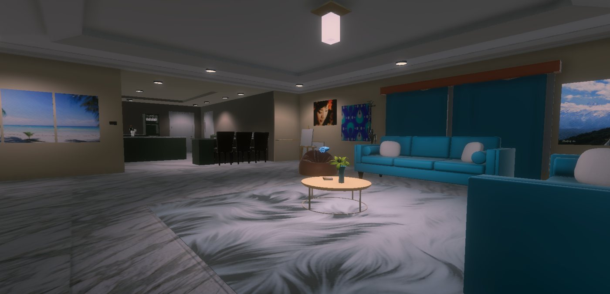

In-headset view · the virtual home's living room
Current research · Aug 2026 → Present
VR Cognitive Assessment & Rehabilitation Game
Research collaboration with Dr. M. Rasel Mahmud, Kennesaw State University
- A Unity-based VR environment for people living with Alzheimer's disease, dementia, MCI, stroke and TBI, built around everyday activities in a realistic virtual home.
- Memory, sequencing and spatial-orientation tasks across Morning, Afternoon and Evening modules, on standalone HTC Vive Focus Vision.
- Two interaction modes in a single build, natural hand movement and raycast pointer, to compare accessibility for users with different motor abilities.